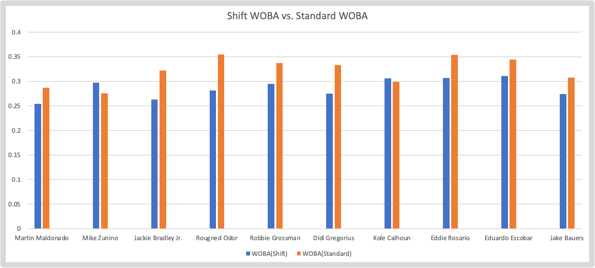

A Seismic Shift: What the New Rule Change Means for Baseball
by A. Carreno
Posted on 12/02/2022
As the end of 2022 approaches, it’s becoming time for baseball fans to start looking towards the future. Next season promises to significantly change America’s pastime thanks to three new rules voted on by the newly formed Joint Competition Committee, which consists of four active players, six members appointed by the MLB, and one umpire.
The first rule that was approved is a pitch clock that will allow for up to thirty seconds between batters, fifteen seconds between pitches when there is no one on base, and twenty seconds between pitches with baserunners. This rule is mainly being implemented to speed up the pace of play because, let’s be real, there just aren’t enough people out there with an attention span or an appreciation for slow burning action anymore. You go to a baseball game nowadays and you’ll see at least half of the crowd on their phones nearly the whole game. I ask myself sometimes why these people even come to baseball games. Something tells me people on Tik Tok and Instagram aren’t overly concerned with your appearance at a baseball game, just saying.
Minor rant aside, the second rule increases base size. Bases will now be eighteen inches square as opposed to fifteen. This should lead to less injuries for infielders as they will have a few more inches of leeway to make plays and avoid collisions with baserunners.
Finally, the last and easily most controversial rule is the ban of the defensive formation known as “the shift”. The shift is a strategic defensive alignment that is used primarily against left handed batters. It involves stacking three infielders on the right (or left for righties, but it's used much less often) to make it harder for the batter to get a hit by pulling the ball (hitting to their batter’s box side). This rule change will ideally allow for more hits and runs (which may boost attendance and fan enthusiasm), but it is a controversial rule change because it takes away from managers a valuable defensive weapon that has been a consistent thorn in a hitter’s side (especially lefties) for over half a century. No matter what the case though, it is undeniable that this change will be greatly felt come next year. Whether it will end up being for the best or not is yet to be seen, but we can always try to guess what will happen. In this article, we’ll try to break down which players will be most affected by the shift ban as well as how baseball in general will be affected. Now with that out of the way, let’s dive right in.
First, let’s cover how baseball in general will be affected by the ban of the shift. We’ll be focusing mainly only on hitting here. Now, don’t get me wrong, pitchers will be affected by the shift ban too, and I’ll briefly share my thoughts about that at the end of this section. Pitchers’ approaches against heavy pull hitters may change a bit, and this may result in a multitude of outcomes, but they will undoubtedly be affected less because this rule change mainly targets offensive production, so our attention will remain mostly on offense.
Over the past five years, hitters have slashed .238/.319/.428 with a .323 wOBA against the shift as opposed to a .250/.315/.408 with a .312 wOBA without it. You might look at this data and say, “Uh... dude doesn’t this disprove your claim that offense will go up without the shift?” Now, I’ll admit that upon first glance it does seem that way. OBP, SLG, and wOBA are all solid when used in tandem to evaluate offensive production. And the fact is that league performance has actually been better in these metrics over the past five years against the shift, but before you write me off as an incompetent moron, let’s remember what the job of the shift is: it’s not to prevent home runs and extra base hits. No amount of stacking infielders on the right side is going to stop a line drive bullet down the right field line or a moonshot home run. What it can do is turn a ground ball single that would normally get through a hole in the infield into a routine groundout. Essentially, the shift prevents some singles, but not much else. Slugging percentage and wOBA actually aren’t useful here because they assign more weight to extra base hits in their calculations, and as just mentioned, the shift does not do much to limit those. As such, batting average is actually a useful tool in evaluating the shift’s performance. It feels odd to say that, but I guess every dog (or statistic in this case, but that sounds way too nerdy) has its day.
There’s also the fact that many of the players who get heavily shifted against are sluggers. Think Joey Gallo, Anthony Rizzo, Cory Seager, Kyle Tucker, Yordan Alvarez, Kyle Schwarber, Shohei Otani, and the list goes on. All of these players mentioned have been shifted against in 85% or more of their plate appearances this season. Obviously, because these guys hit a lot of home runs and draw plenty of walks, the slugging percentage and wOBA against the shift will increase. Both of these reasons being as they are, the twelve point difference (which is not crazy, but is far from insignificant) in shift batting average versus normal batting average actually tells us something. It tells us that the shift is indeed preventing base hits at a decent clip compared to the standard infield formation. As such, without the shift, there will undoubtedly be more hits allowed. And more hits means more baserunners, so I have a theory that stolen base numbers will increase considerably as well; the wider bases change will also help in this regard.
I think the small ball play style that has greatly died out in recent years and that ruled the game in the 70s and 80s will make something of a modernized comeback. With the shift not holding them back anymore, pull hitters will be able to swing more relaxed and naturally and not have to try to do as much as before. They won’t need to hit home runs to beat the shift or put a lot of emphasis on hitting the ball the other way.
In terms of pitching, which I’ll briefly touch on as promised, the biggest change you’re likely to see will be in terms of pitch location and selection against extreme pull hitters. I believe it is still in the best interest of pitchers to continue to attack pull hitters inside as they have done in the past to induce contact into the shift. Pull hitters are pull hitters for a reason; they struggle hitting the ball to the opposite field and by jamming them inside it's even harder to hit to the opposite field since they can’t extend the bat head out in their swing. That said, the incentive to pitch inside is not going to be as strong as before: pitchers won’t gain any advantage from encouraging hitters to pull the ball by pitching inside. There will be the same number of players on both sides of the field nearly every time. So, in general, look for pitchers to get a bit more creative in their attacks of these batters that are often shifted against next season. Specifically, I’d expect a lot more fastballs up and in or up and away. Over the past five seasons, left handed hitters have a .244 batting average against fastballs in those zones (when the infield is not shifted) versus a .297 batting average against fastballs middle in, middle away, low and in, and low and away. I didn’t include fastballs right down the middle for obvious reasons: any professional baseball hitter can handle fastballs right down the middle.
Now, let’s talk about specific teams and players: who is going to see a major improvement in their performance with the shift gone? To answer that question, I compared hitters’ performances against the shift versus their performances without the shift to see who was most held back by the shift (this comparison spans over the last five seasons). I was able to narrow it down to a list of ten players with the most abysmal performances against the shift. Let me say, the results were pretty interesting: among these ten players, you have some very well known names: Eddie Rosario (Braves), Didi Gregorius (Phillies), and my personal favorite, Rougned Odor (Orioles, and let it be said, he can pack a punch for a small guy as Jose Bautista darn well knows; maybe he should have taught my boxing class). You also have some real nobodies (no offense, fellas) like Jake Bauers (Mariners), Mike Zunino (Rays), Kole Calhoun (Rangers) and Robbie Grossman (Braves). The other three guys I haven’t named, maybe you know them, maybe you don’t, are Martin Maldonado (Astros), Eduardo Escobar (Mets), and Jackie Bradley Jr. (Blue Jays). To put into perspective how horrid their performances against the shift are, seven of these guys had a wOBA under .300 against the shift, and eight of these guys had a batting average of below .220 against it. Meanwhile, the slash line for your average major league hitter against the shift over the past five seasons is a .238/.319/.427/.324. These are by no means good offensive numbers, and the fact that these players fall considerably below this benchmark again just goes to show how anemic their performances against the shift have been.
But, the more interesting finding here is these hitters’ performances when they are not facing the shift (your standard two infielders on each side positioning). The facts and data demonstrate a remarkable improvement for nearly all ten hitters surveyed here in batting performance when facing a standard infield. To verify the validity of this finding, have a look at the graph below.
A graph of these hitters’ wOBA against the shift and against standard defense. Eight out of ten batters saw solid improvement against standard defense.
The level of improvement shown by this graph is hardly insignificant; you do have a pair of outliers in Mike Zunino and Kole Calhoun who actually fared slightly worse against standard defense, but discounting these two, there was a mean improvement of .046 in wOBA for each player against a standard defense. In particular, Jackie Bradley Jr. and Rougned Odor saw immense improvements in their wOBAs at increases of .059 and .074, respectively. And the massive improvements don’t stop here: there was also a mean increase of roughly .124 in OPS (discounting our outliers). The standouts here were Rougned Odor and Didi Gregorius; these guys saw improvements of .194 and .161, respectively.
Why these differentials in wOBA and OPS are as large as they are is no easy thing to explain, but I really can imagine how freeing it must feel from the batter’s perspective to not have to be pressured to hit the ball the opposite way or have to essentially swing for a home run just to beat the shift. This element of relaxation and ease in the batter’s mind may be unquantifiable, but it merits consideration as a potential reason to explain these discrepancies. Simply put, it seems like nearly all of these players will see some kind of boost in their batting performance next year without the shift to hinder them. It is impossible to say for sure how much of their current failures we can attribute to the burden of having to face the shift, but I think it is more than reasonable to assume that it is at least one of the more significant reasons for these hitters’ general struggles. As such, next year seems like it could upset some fantasy baseball fans if they underestimate some of the mostly under the radar players mentioned in this article.
The shift has been around in baseball for as long as we fans can remember (at least those of us under 80 years old). It has been a staple for managers to use when the situation calls for it as its defensive value is clearly visible in the number of hits it has successfully prevented over the years and the number of hitters it has frustrated for decades on end. That said, as the saying goes, “nothing lasts forever,” and I suppose the shift is no exception to this old adage. Time changes things, and baseball seems to be following suit with the shift’s removal from the game.
There have been very mixed reactions to this change, with the players and managers tending to receive it less positively than the fans and the administrative baseball establishment at large. Still, no matter what you believe, the simple fact is that without the shift there are going to be some players that may finally get their time to breakout and showcase their true offensive potential, and left handed hitters in particular will feel the difference more since they are so often shifted against. How pitchers adapt remains to be seen, but they will have to change their approaches to prosper as well, that’s for sure. Whatever the case, 2023 promises to be a revolutionary season in the sport and an interesting change of pace from what we’re used to.